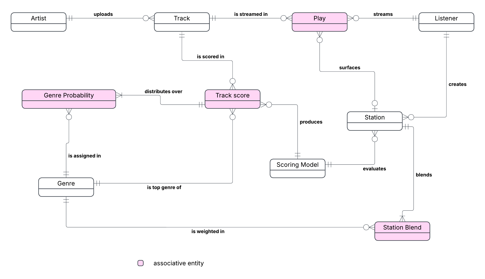

Crow's foot notation. Entity names and relationships only: attributes and keys belong to the physical model, as the course's Unit 2 table specifies.

White boxes are entities; pink boxes are associative entities. Each relationship is labelled with a verb read from the parent (the "exactly one" end) to the child. The symbol at each end says how many rows on that side relate to one row on the other: a double bar is exactly one, a bar with a crow's foot is one or many, and a circle makes that side optional (zero).
Two of the associative entities sit on three relationships, which the professor called ternary structures. Track Score joins Track and Scoring Model and names a top Genre. Play joins Listener and Track and may name the Station that surfaced it.
This is the official diagram, drawn by Pabari, Nidhi Nilesh. Before it replaced the generated draft it was checked line by line: the same ten entities (six plain, four associative), the same thirteen relationships with the same verbs, and the same cardinality at every one of the 26 line ends. The draft is kept at source/conceptual_model/conceptual_data_model_draft.png.